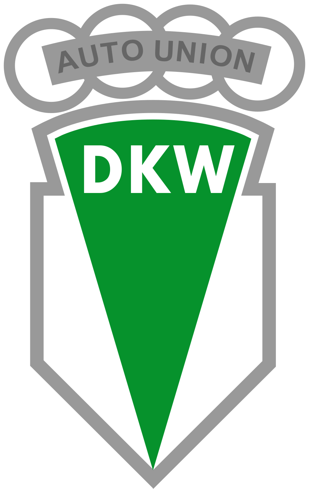

DKW
DKW(Dampf-Kraft-Wagen)는 독일의 자동차·모터사이클 브랜드이다. 1932년 아우토 유니언을 설립한 4개 기업 중 하나로, 오늘날 아우디 기업의 선조로 간주된다.
최종 업데이트

DKW는 어떤 브랜드인가
DKW는 독일의 자동차와 모터사이클 브랜드이며, 풀네임은 Dampf-Kraft-Wagen이다. 위키데이터에는 1916년 설립되었고 본사는 켐니츠이며 창업자는 Jørgen Skafte Rasmussen으로 기록되어 있다.
모기업은 아우토 유니언이다. DKW는 1932년 아우토 유니언을 설립한 4개의 기업 중 하나였으며, 이 때문에 오늘날 아우디 기업의 선조로 간주된다.
차종 목록에는 전전 생산의 DKW F1, F2, F4, F5, F7, F8과 전후 생산의 DKW Schnellaster van, DKW Munga, DKW Junior, DKW F102 등이 포함된다. 자동차뿐 아니라 모터사이클과 스쿠터도 다룬 브랜드이다.
DKW는 어떻게 시작되고 성장했나
DKW는 1916년 설립된 것으로 기록되어 있으며 본사는 켐니츠이다. 창업자는 Jørgen Skafte Rasmussen이다.
DKW는 1932년 아우토 유니언을 설립한 4개의 기업 중 하나였고, 이후 아우토 유니언이 모기업으로 기록되었다. 전전에는 1928년부터 DKW Typ P가 생산되었고, 전후에는 1949년부터 DKW Schnellaster van이 생산되었다.
전전 차종 중 DKW F7(1937–1938)은 약 80,000대로, 목록에서 가장 많은 생산 대수가 기재되어 있다.
DKW의 브랜드 아이덴티티는 무엇인가
Dampf-Kraft-Wagen을 풀네임으로 하며, 아우토 유니언을 설립한 4개 기업 중 하나로서 오늘날 아우디 기업의 선조로 간주되는 독일의 자동차·모터사이클 브랜드이다.
DKW의 대표 제품과 서비스는 무엇인가
자동차 부문의 전전 생산 차종으로는 DKW Typ P, DKW Typ 4=8, DKW F1, F2, F4, F5, F7, F8이 있으며, DKW F9은 프로토타입으로 기재되어 있다. 생산 대수는 DKW Typ P가 약 2,000대, DKW Typ 4=8이 약 24,000대, DKW F5가 약 60,000대, DKW F8이 약 50,000대로 기재되어 있다.
전후 생산 차종으로는 DKW Schnellaster van(1949–1962), DKW F89, DKW 3=6, DKW Monza, DKW Munga 오프로드(1956–1968), DKW Junior, DKW F102가 있다. 모터사이클과 스쿠터도 제품군에 속한다.
DKW는 지금 어떤 상태인가
DKW는 위키데이터상 모기업이 아우토 유니언이며, 1932년 아우토 유니언을 설립한 4개의 기업 중 하나로서 오늘날 아우디 기업의 선조로 간주된다. 차종 목록에서 가장 늦게 끝난 생산 기간은 DKW Munga 오프로드의 1956–1968년이다.
근거에는 현재의 생산 여부나 규모에 관한 기술이 없다.
DKW 로고는 어떻게 변해왔나
자주 묻는 질문
DKW는 어느 나라 브랜드인가요?
DKW는 독일의 모빌리티 브랜드입니다.
DKW는 언제 설립되었나요?
DKW는 1932년 설립되었습니다.
DKW의 브랜드 아이덴티티는 무엇인가요?
Dampf-Kraft-Wagen을 풀네임으로 하며, 아우토 유니언을 설립한 4개 기업 중 하나로서 오늘날 아우디 기업의 선조로 간주되는 독일의 자동차·모터사이클 브랜드이다.
DKW의 대표 제품은 무엇인가요?
자동차 부문의 전전 생산 차종으로는 DKW Typ P, DKW Typ 4=8, DKW F1, F2, F4, F5, F7, F8이 있으며, DKW F9은 프로토타입으로 기재되어 있다.
DKW는 어느 기업이 소유하고 있나요?
DKW는 위키데이터상 모기업이 아우토 유니언이며, 1932년 아우토 유니언을 설립한 4개의 기업 중 하나로서 오늘날 아우디 기업의 선조로 간주된다.
DKW의 창업자는 누구인가요?
DKW의 창업자는 Jørgen Skafte Rasmussen입니다(위키데이터 기준).
DKW의 본사는 어디에 있나요?
DKW의 본사는 켐니츠에 있습니다(위키데이터 기준).
출처와 검증
DKW 관련 참고: 위키데이터 Q639268 · 한국어 위키백과 · 영어 위키백과. 브랜드명은 한글과 원어를 함께 표기하되 데이터에 없는 표기는 만들지 않습니다. 기원 국가·설립연도는 검수된 정의문에서 확인된 값을 우선하고, 없을 때만 공식 웹사이트 URL이 일치하는 위키데이터 개체의 값을 씁니다. 위키데이터 값은 2026-11-13 기준입니다.